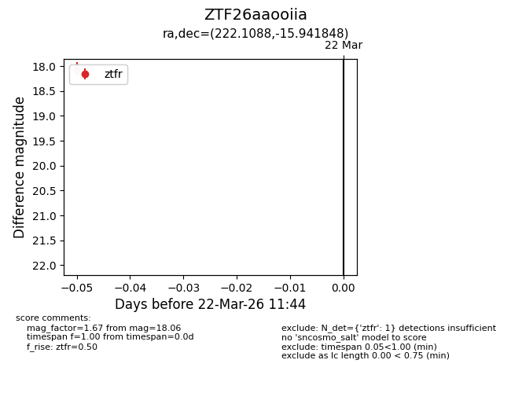
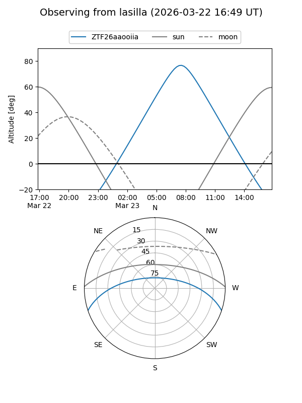
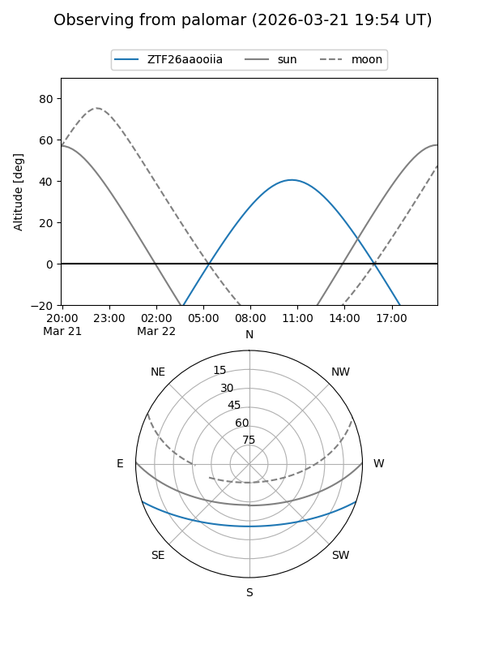

ZTF26aaooiia
Target ZTF26aaooiia at 2026-03-22 11:46
Aliases and brokers:
FINK: link
Lasair: link
ALeRCE: link
alt names
ZTF26aaooiia (ztf,fink_ztf)
Coordinates:
equatorial (ra, dec) = 222.1088,-15.94185
equatorial (HMS+DMS) = 14:48:26.10,-15:56:30.65
galactic (l, b) = (339.7770,+38.41925)
Flags:
Photometry:
last ztfr=18.06
1 ztfr detections
Lightcurve

Visibility


Additional plots